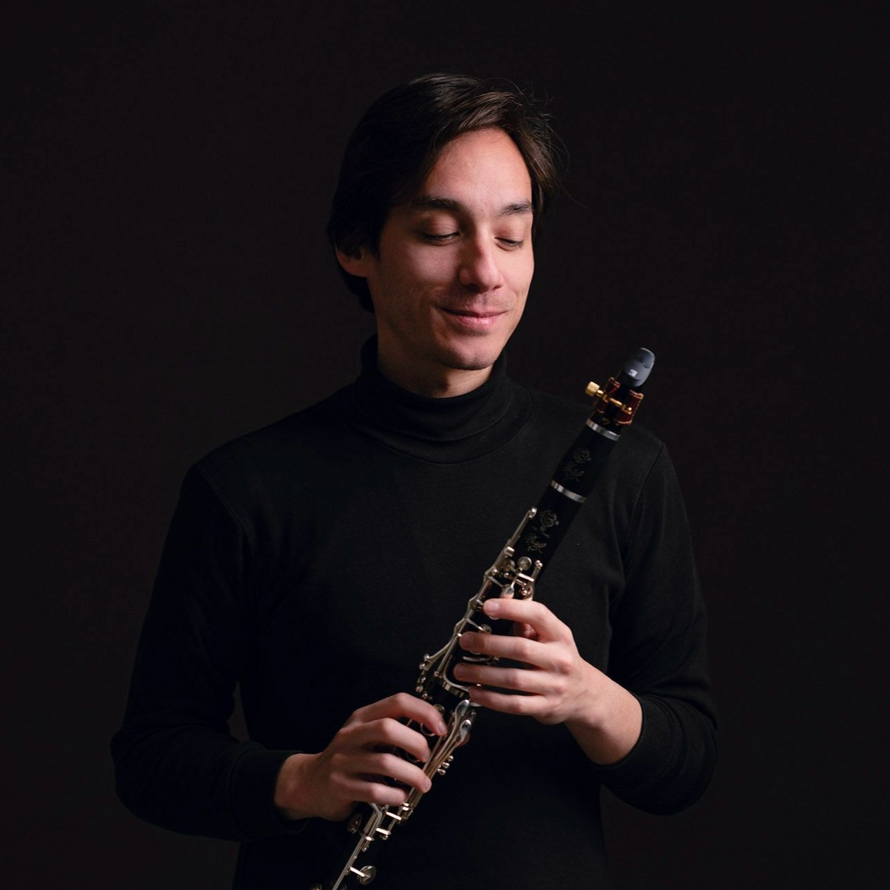

Masterclass di Clarinetto con
Yoshua Fortunato

2 - 3 - 4
Settembre 2026
Auditorium di Villa Sottanis
Casarza Ligure (GE)
Nato a Genova si diploma al Conservatorio N.Paganini di Genova sotto la guida del Maestro P.P Fantini con il massimo di voti e la lode.
Successivamente si perfeziona presso la Zürcher Hochschule der Kunste con il professor Fabio di Casola.
Frequenta i corsi di Alessandro Carbonare presso l'Accademia Chigiana e l'Accademia di Santa Cecilia.
Nel 2016 ha partecipato al Verbier Festival Accademy orchestra e successivamente nel 2018 in quello del Festival di Lucerna.
Invitato a suonare come primo clarinetto con diverse orchestre e istituzioni liriche le quali: BBC Symphony Orchestra,
Orchestra della Toscana, Orchestra dell'Opera di Zurigo, il Musikkollegium di Winterthur, l'Accademia di Santa Cecilia,
teatro dell'Opera San Carlo di Napoli e Orchestra Sinfonica Siciliana.
Ha ricoperto il ruolo di primo clarinetto presso L'Estonian National Opera (Estonia) e l'Opera National de Lyon (Francia)
Yoshua Fortunato è attualmente Primo clarinetto presso l'Orchestra dell'Opera di Roma ed è artista Selmer e Vandoren.
Affianca attività ditattiche di masterclass in italia e all'estero ed insegna regolarmente all'Accademia Sherazade di Roma.
1. Per partecipare ai corsi occorre presentare la domanda di iscrizione inviandola a mezzo mail all’indirizzo corpobandisticocasarza@gmail.com o a mezzo PEC all’indirizzo bandacasarza@pec.it specificando nome cognome e recapito del partecipante allegando la ricevuta di pagamento dell’anticipo di € 150,00.
2. Il corso si terrà nei giorni 2-3-4 Settembre 2026 a Casarza Ligure (GE) presso l’Auditorium di Villa Sottanis in Via Annuti, 36.
3. Il costo del corso è di € 280,00 per gli allievi effettivi e di € 75,00 per gli allievi uditori. La quota di iscrizione comprende la frequenza al corso e la polizza assicurativa.
4. L’anticipo di € 150,00 dovrà essere pagato tramite bonifico bancario intestato a “Corpo Bandistico di Casarza Ligure e della Val Petronio” IBAN IT91P0503431920000000000772 indicando nella causale il nome e cognome dell’allievo e la dicitura “Contributo per l’attività istituzionale dell’Associazione”.
5. Il saldo dovrà essere versato entro la fruizione della prima lezione a mezzo bonifico bancario con le stesse modalità dell’acconto.
6. Il numero, la tipologia e la durata delle lezioni è a insindacabile giudizio del docente.
7. Il corso sarà attivato al raggiungimento del numero minimo di sei allievi effettivi. In caso di mancata attivazione del corso la quota versata sarà rimborsata. In caso di rinuncia dell’allievo, la quota versata non sarà rimborsata.
8. Il calendario delle lezioni sarà comunicato durante il primo giorno di lezione.
9. Il Corpo Bandistico di Casarza Ligure e della Val Petronio non è responsabile di eventuali furti o danni a persone e cose che si dovessero verificare durante il periodo di svolgimento del corso in tutti gli spazi riservati alle lezioni.
10. L’iscrizione comporta l’accettazione integrale del presente regolamento, che costituisce anche liberatoria per l’utilizzo di immagini e registrazioni delle lezioni o eventuali concerti senza che da ciò derivi alcun diritto ai partecipanti.
Iscrizioni entro il 21/08/2026
Per partecipare ai corsi occorre presentare la domanda di iscrizione a mezzo mail all’indirizzo corpobandisticocasarza@gmail.com o a mezzo PEC all’indirizzo bandacasarza@pec.it esplicitando nome e cognome e recapiti del partecipante allegando la ricevuta di pagamento dell’anticipo di € 150,00.